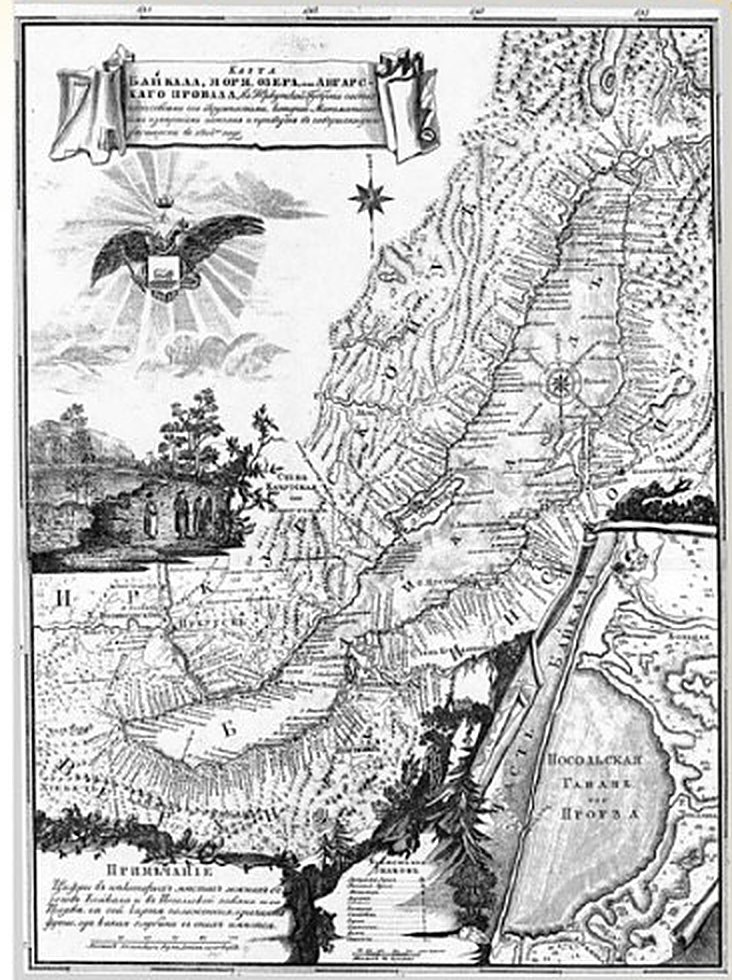
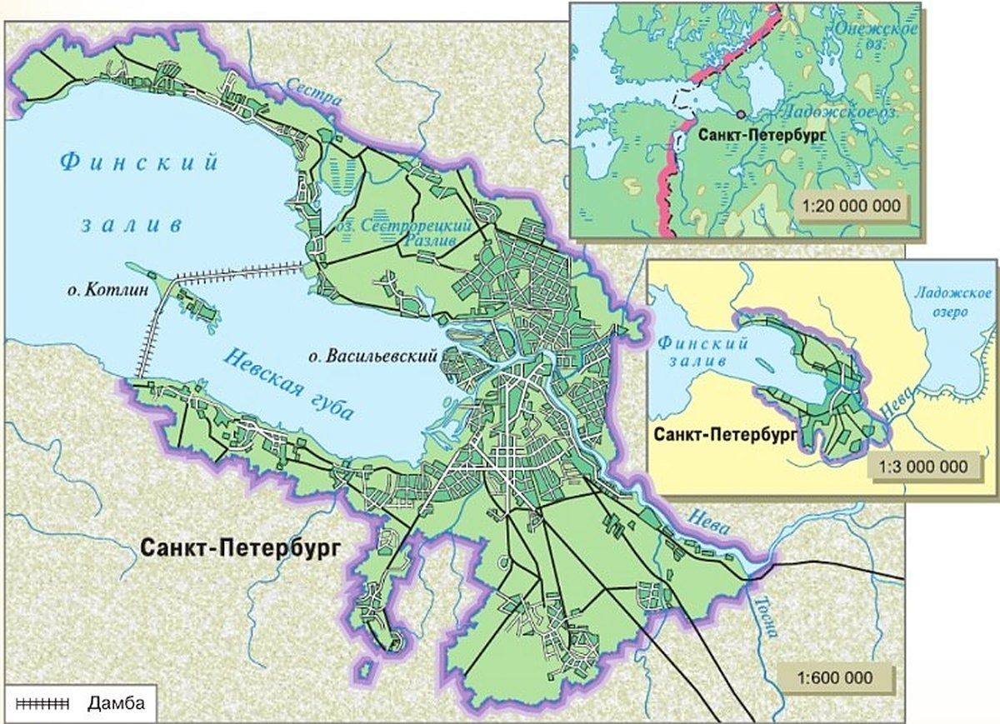

Почему географическими картами пользуются чаще, чем глобусом?
Самая точная модель Земли — глобус. По-латыни «глобус» — «шар». Первый глобус сделали, считают, ещё во II веке до нашей эры, но он не сохранился.
Самый старый из сохранившихся глобусов сделал Мартин Бехайм в 1492 году — в год, когда Колумб открыл Америку (§ 4). Он хранится в Нюрнберге.
Глобус меньше Земли в миллионы раз. Его можно вращать, а ось наклонена так же, как земная ось к плоскости орбиты (§ 10). Северный полюс — вверху, Южный — внизу. Материки и океаны на глобусе без искажений: те же очертания, на тех же местах.
Но на глобусе всё очень мелко, а огромный шар неудобен. Поэтому гораздо чаще пользуются географическими картами — плоским изображением поверхности Земли (рис. 40).
Самая точная пространственная модель Земли — глобус. В переводе с латинского языка слово «глобус» означает «шар». Считают, что первый земной глобус был создан ещё во II в. до н. э., но он не сохранился до наших дней.
Первый сохранившийся глобус был создан Мартином Бехаймом в год открытия Америки (1492). Глобус хранится в Нюрнберге.
Размеры глобуса по сравнению с реальными размерами планеты уменьшены в миллионы раз. Глобус (он есть в каждом кабинете географии) можно вращать, и ось его вращения наклонена под тем же углом, что и земная ось к плоскости земной орбиты. Вверху глобуса находится Северный полюс, а внизу — Южный полюс. На поверхности глобуса без всяких искажений изображены материки и океаны. Они имеют те же очертания и так же размещены, как и на Земле.
На обычном глобусе, к сожалению, все изображения очень мелкие, а с огромным шаром неудобно работать. Поэтому гораздо чаще пользуются географическими картами — плоским изображением поверхности Земли (рис. 40).

самая точная модель · без искажений · ось наклонена, как у Земли · но всё мелко и шар неудобен
плоская · удобная · можно крупно и подробно · но выпуклую Землю приходится «распрямлять»
Глобус точнее, карта удобнее.
Географическая карта — это обобщённое уменьшенное изображение Земли или большого участка её поверхности на плоскости с помощью условных знаков.
Глобус — самая точная модель Земли, но на практике удобнее работать с географическими картами.
1. Глобус — самая точная модель Земли. Почему же им пользуются реже, чем картами?
2. Что общего у глобуса и Земли, кроме формы?
Какими свойствами обладает географическая карта?
Карта похожа на план: Земля на ней тоже на плоскости, в масштабе и условными знаками (§ 12—13). Но у карты есть свои важные свойства.
1. Обобщение. Карта не такая подробная, как план. Территория большая, поэтому масштаб мельче и приходится обобщать: 1 см на карте — это от десятков до сотен километров. На карте только главное.
2. Свои условные знаки. Многие знаки не такие, как на планах. На плане зелёным рисуют лес, а на физической карте — низменности, самые низкие места суши. Моря и океаны — голубым и синим, горы — оттенками коричневого. Высоты и глубины показывают шкалой высот и глубин и послойной окраской.
Условные знаки с объяснениями — это легенда карты. По-латыни «легенда» — «то, что читают». Это ключ к карте: работу с картой всегда начинают с легенды.
3. Математическая основа — это главное. Благодаря ей выпуклую Землю можно нарисовать на плоском листе и нанести градусную сетку — о ней следующий параграф.
4. Карты очень разные. Кроме самой местности, на них показывают разные явления: например, на картах России — сколько выпадает осадков, какие народы где живут, какие леса.
Карту не заменишь никаким описанием: она наглядна, точно передаёт сведения, по ней можно изучать, как всё связано, планировать и предсказывать.
Географическая карта схожа с планом в том, что поверхность Земли тоже изображается на плоскости, в масштабе и с помощью условных знаков. Однако по сравнению с планом карта обладает рядом очень важных отличительных свойств.
Во-первых, карта далеко не так подробна, как план. Из-за того что на карте изображают крупные по размерам территории, приходится использовать обобщение и более мелкий масштаб. Одному сантиметру на карте могут соответствовать реальные расстояния от десятка до сотен километров. На карте показаны не все, а только главные объекты или явления.
Во-вторых, многие условные знаки, которыми пользуются при составлении карт, отличаются от тех, которые приняты на планах. Например, на плане зелёным цветом изображаются леса, а на физической карте полушарий и России — наиболее низкие места суши — низменности. Океаны, моря и их части на физических картах показаны в виде чётко очерченных контуров голубого (синего) цвета, горы в зависимости от их высоты — разными оттенками коричневого. Чтобы показать разную глубину морей и высоту гор, на картах применяют шкалу высот и глубин и метод послойной окраски.
Условные знаки с их расшифровкой образуют легенду карты. Слово «легенда» дословно переводится с латинского «то, что читают». Легенда — это ключ, с помощью которого раскрывается содержание карты. Работу с картой всегда нужно начинать с изучения её легенды.
В-третьих, и это главное, у каждой карты есть математическая основа. Эта основа позволила перейти от выпуклого изображения земной поверхности к плоскому и нанести на карту градусную сетку, которую мы будем изучать на следующем уроке.
Наконец, карты очень многообразны по содержанию. На многих картах, кроме изображения поверхности определённой территории, показаны размещение и связи самых разных природных и общественных явлений. Так, на картах России можно отдельно показать, например, среднегодовое количество осадков, или национальный состав населения, или состав и состояние лесов и многое другое.
Карту нельзя заменить никаким описанием. Будучи наглядной, она точно передаёт географическую информацию, позволяет изучать пространственные взаимосвязи, планировать и прогнозировать многие явления и процессы.
Главные отличительные особенности географических карт — обобщение информации и математическая основа.
3. На плане зелёный — лес, а на физической карте — низменность. Как не перепутать?
4. Почему карта не такая подробная, как план?
Какие бывают географические карты?
Карты различаются по масштабу, по охвату территории и по содержанию.
По масштабу. На рис. 41 Петербург в трёх масштабах. Чем больше территория, тем мельче масштаб. И чем мельче масштаб, тем меньше подробностей.
По охвату. Бывают карты мира, материков и океанов, стран и их частей. У карты мира масштаб самый мелкий.
По содержанию. Общегеографические (физические, топографические) показывают общий облик местности: горы, равнины, реки, моря. Тематические — на одну тему: землетрясения и вулканы, природные зоны, страны мира (политическая карта). А на контурных — только очертания; наносить на них будешь ты.
Атлас — собрание разных карт одной территории: мира, страны, района. Часто там есть и графики, фото, схемы. Слово «атлас» ввёл Герард Меркатор в XVI веке (§ 5).
Географические карты различаются по масштабу, пространственному охвату территории и содержанию.
На рисунке 41 показана территория Санкт-Петербурга в различных масштабах. Вы видите, что:
— чем большее пространство надо изобразить, тем мельче должен быть масштаб;
— чем мельче масштаб, тем менее подробно содержание карты.
По пространственному охвату выделяют карты мира, карты материков и океанов, отдельных стран и их частей. Самый мелкий масштаб используют для карты мира.
Очень многообразны карты по содержанию. Они могут быть общегеографические и тематические. На общегеографических (физических или топографических) картах отображён общий облик пространства — горы, равнины, реки, моря и другие важнейшие природные объекты. Тематические карты посвящены отдельной теме. Например, карта землетрясений и вулканизма (с. 80), карта природных зон (с. 188—189), политическая карта, на которой показаны страны мира. Существуют и разные контурные карты — на них нанесены только контуры, очертания географических объектов. Эти карты будете в дальнейшем использовать и вы, нанося на них необходимую информацию.
Атлас — это собрание географических карт разной тематики для единой территории: мира, страны, района. Часто атласы дополнены графиками, фотографиями, схемами, профилями. Для изучения географии в школе атлас чрезвычайно важен. Вы уже знаете, что слово «атлас» введено Герардом Меркатором в XVI в.

▲ Сравни три карты: на какой видны улицы, а на какой Петербург — просто точка?
В зависимости от масштаба различают карты:
— крупномасштабные — от 1 : 10 000 до 1 : 200 000;
— среднемасштабные — от 1 : 200 000 до 1 : 1 000 000;
— мелкомасштабные — мельче 1 : 1 000 000.
Карты различаются по масштабу, охвату территории и содержанию.
5. На рис. 41 Петербург в трёх масштабах. Что меняется, когда масштаб мельчает?
6. Какая карта нужна, чтобы узнать, какие страны есть в Европе, — общегеографическая или тематическая?
Итоги параграфа
- Изучите свой школьный атлас. Опишите виды географических карт, заполнив таблицу в тетради.
| Вид географической карты атласа | Что изображено | Масштаб |
|---|---|---|
| 1. Физическая карта полушарий | ||
| 2. Физическая карта России | ||
| 3. Политическая карта мира | ||
| 4. … |
- Что называется географической картой?
- Какими свойствами обладает карта?
- Как различаются карты по масштабу?
- Какую информацию содержит легенда карты?
- Выберите особенности, которые отличают мелкомасштабную карту: а) изображаются большие участки территории; б) учитывается кривизна шарообразной поверхности Земли; в) присутствует градусная сетка; г) используется крупный масштаб.
- Карта масштаба 1 : 500 000 относится к: 1) крупномасштабным; 2) среднемасштабным; 3) мелкомасштабным.
- Найдите и проанализируйте физическую карту вашей области, края и сделайте вывод, к каким картам по масштабу она относится.
- Определите, в каком масштабе выполнена физическая карта России в Приложении.
- Распределите карты в порядке уменьшения подробности и охвата изображаемой территории:
1) М 1 : 1 000 000 2) М 1 : 10 000 3) М 1 : 250 000 4) М 1 : 100 000 - Подготовьте сообщение на тему «Карта — памятник культуры»: а) придумайте яркое название; б) составьте план; в) подберите литературу.
Проверь себя
Самая точная модель Земли
Без искажений.
Можно сделать подробной — видно улицы
Крупный масштаб.
Ось наклонена, как у Земли
Как земная ось к плоскости орбиты.
Плоская, удобно носить с собой
Плоское изображение поверхности Земли.
Всё очень мелко
Уменьшен в миллионы раз.
Есть легенда и градусная сетка
Легенда — ключ к карте.
1 : 25 000 (рис. 35)
Между 1 : 10 000 и 1 : 200 000.
1 : 600 000 (Петербург, рис. 41)
Между 1 : 200 000 и 1 : 1 000 000.
1 : 20 000 000
Мельче 1 : 1 000 000.
1 : 100 000
Крупнее 1 : 200 000.
1 : 500 000
Задание 7.
Карта мира
У карты мира самый мелкий масштаб.
1. Что в переводе с латинского значит «глобус»?
2. Кто сделал самый старый сохранившийся глобус?
3. Что зелёный цвет означает на физической карте?
4. С чего надо начинать работу с картой?
5. Карта масштаба 1 : 1 000 000 и мельче — это…
6. На какой карте показаны страны мира?
Расскажи вслух
Глобус и карта
- Глобус — самая точная модель Земли, без искажений; ось наклонена, как у Земли.
- Самый старый сохранившийся глобус — Мартин Бехайм, 1492, Нюрнберг.
- Но на глобусе всё мелко — поэтому чаще пользуются картами.
Свойства географической карты
- Обобщение: масштаб мельче, только главное.
- Свои условные знаки и легенда; шкала высот и глубин, послойная окраска.
- Математическая основа (главное) и многообразие содержания.
Какие бывают карты
- По масштабу: крупно-, средне-, мелкомасштабные.
- По охвату: мира, материков и океанов, стран и их частей.
- По содержанию: общегеографические, тематические, контурные; атлас — собрание карт.